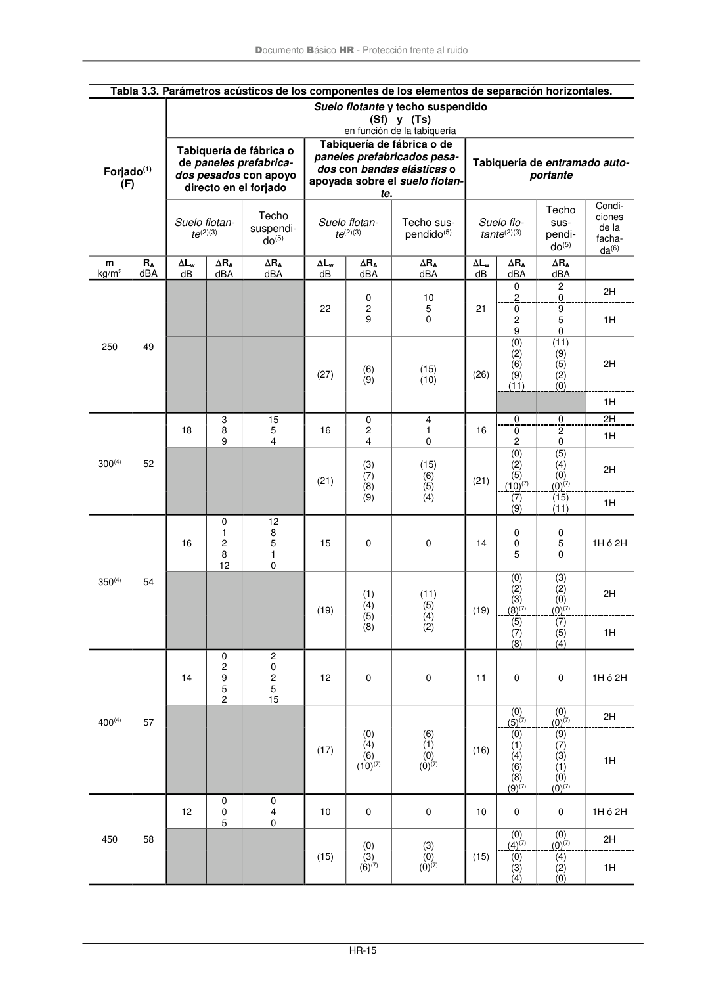

DB-HR Protección frente al ruido · edición 2019-12-20 · capa oficial
Documento DB-HR-oficial · SHA-256 del PDF a67baeca5138bb1f121f797d23a79a4557bd9ac4abacd954024893e05411eeab
Página física 21 de 80.
Copia fiel del PDF fuente · Fuente oficial
Ficha de la disposición en la fuente oficial
Formato: Texto de la página (Markdown)
Documento Básico HR - Protección frente al ruido HR-15 Tabla 3.3. Parámetros acústicos de los componentes de los elementos de separación horizontales. Forjado(1) (F) Suelo flotante y techo suspendido (Sf) y (Ts) en función de la tabiquería Tabiquería de fábrica o de paneles prefabrica- dos pesados con apoyo directo en el forjado Tabiquería de fábrica o de paneles prefabricados pesa- dos con bandas elásticas o apoyada sobre el suelo flotan- te. Tabiquería de entramado auto- portante Suelo flotan- te(2)(3) Techo suspendi- do(5) Suelo flotan- te(2)(3) Techo sus- pendido(5) Suelo flo- tante(2)(3) Techo sus- pendi- do(5) Condi- ciones de la facha- da(6) m kg/m2 RA dBA Lw dB RA dBA RA dBA Lw dB RA dBA RA dBA Lw dB RA dBA RA dBA 250 49 22 0 2 9 10 5 0 21 0 2 2 0 2H 0 2 9 9 5 0 1H (27) (6) (9) (15) (10) (26) (0) (2) (6) (9) (11) (11) (9) (5) (2) (0) 2H 1H 300(4) 52 18 3 8 9 15 5 4 16 0 2 4 4 1 0 16 0 0 2H 0 2 2 0 1H (21) (3) (7) (8) (9) (15) (6) (5) (4) (21) (0) (2) (5) (10)(7) (5) (4) (0) (0)(7) 2H (7) (9) (15) (11) 1H 350(4) 54 16 0 1 2 8 12 12 8 5 1 0 15 0 0 14 0 0 5 0 5 0 1H ó 2H (19) (1) (4) (5) (8) (11) (5) (4) (2) (19) (0) (2) (3) (8)(7) (3) (2) (0) (0)(7) 2H (5) (7) (8) (7) (5) (4) 1H 400(4) 57 14 0 2 9 5 2 2 0 2 5 15 12 0 0 11 0 0 1H ó 2H (17) (0) (4) (6) (10)(7) (6) (1) (0) (0)(7) (16) (0) (5)(7) (0) (0)(7) 2H (0) (1) (4) (6) (8) (9)(7) (9) (7) (3) (1) (0) (0)(7) 1H 450 58 12 0 0 5 0 4 0 10 0 0 10 0 0 1H ó 2H (15) (0) (3) (6)(7) (3) (0) (0)(7) (15) (0) (4)(7) (0) (0)(7) 2H (0) (3) (4) (4) (2) (0) 1H

Datos candidatos: compruebe celdas y notas en el PDF.